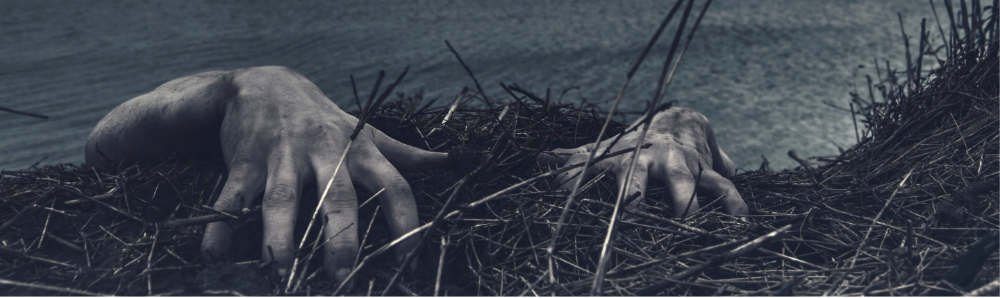
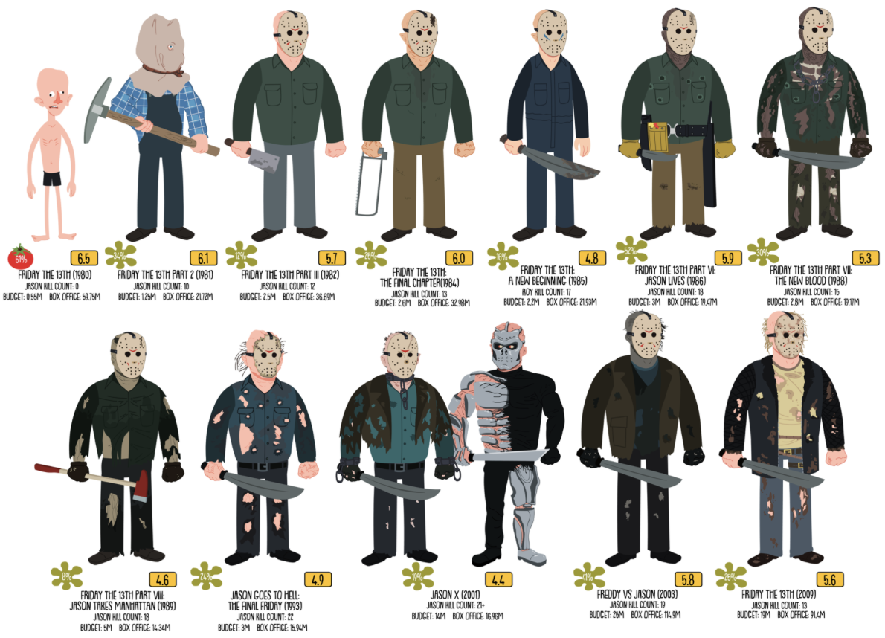

Jason Voorhees

Présentation:
Jason Voorhees est un personnage fictif né avec une paralysie faciale périphérique du coté droit de son visage, ce qui fera fuir son père. Jason est donc élevé par sa mère Pamela Voorhees. Il devient un meurtrier suite à un accident lors d’une colonie de vacance.
Durant l'été 1957, Pamela part travailler comme cuisinière dans une colonie de vacances appelée « Camp Crystal Lake » avec son fils. Tandis que celui-ci est malmené par les autres enfants dont il est le souffre-douleur, il glisse et tombe à l'eau. Les moniteurs responsables de lui ne l'ont pas secouru car ils étaient en train de copuler. Jason, ne sachant pas nager, s'est noyé. L'année suivante, ce même couple de moniteurs fut retrouvé assassiné et la colonie ferma. Le meurtrier s'avéra être Pamela Voorhees, qui s'est vengée en tuant le couple responsable de la noyade de son fils.
Physique
Dans Le Tueur du vendredi, il porte un sac de patates comme Elephant Man, avec un trou pour un œil, qu'il quitte pour le fameux masque de hockey à partir de Meurtres en 3 dimensions. Jason porte des chemises, souvent des bleus de travail ou des vestes usagées. De temps en temps, il est muni de gants. Dans le film Jason X, il est transformé son corps est fait d'un alliage de métal et de sa peau, son masque de hockey devenant un masque futuriste.
Evolution de Jason Voorhees au fil des années